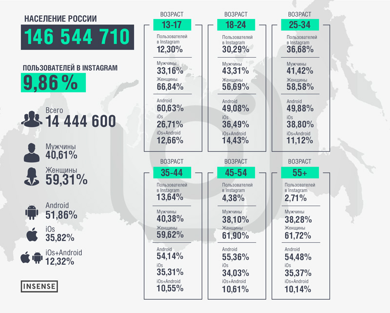
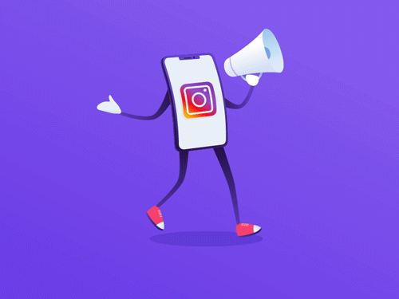
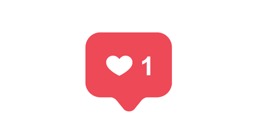

Специфика продвижения аккаунта в Instagram. Руководство
Актуальность аккаунта в Instagram: не откладывайте регистрацию надолго!
Insense – в начале 2018 приводила данные о 15 млн. активных пользователей Instagram. Ежемесячно порядка 800 миллионов людей используют приложение, при этом большая половина из них заходит в Instagram каждый день. Каждую секунду публикуется тысяча комментариев к 40 миллионам фото постов, публикуемых ежедневно. Скорость лайков составляет 8500 тысяч единиц в секунду.

Еще один мониторинг – исследование компании BlogLovin – свидетельствует о том, что Instagram является лучшей платформой для привлечения клиентов. В этом уверены больше половины лидеров мнений. Всего было опрошено 2500 представителей.
В 2018 появился еще один повод запустить свой бизнес на этой платформе. Причина – возможность подключения бизнес-аккаунта, привязав к ней публичную страницу FB. Это действительно было настоящим прорывом.
Что дает переход профиля компании в Instagram, и какими особенностями обладает бизнес аккаунт? Во-первых, здесь есть функция прямой связи, т.е. кнопка «Связаться». Во-вторых, возможности продуманы так, что пользователь может не только позвонить с помощью стандартных приложений или отправить сообщение на электронный ящик, но и увидеть физическое месторасположение, проложить маршрут, узнать время и расстояние.
Отдельный вопрос – модерация комментариев к публикациям. Настройки аккаунта позволяют отключать комментирование, причем сделать это можно как к отдельным постам и фото, так и ко всем одновременно. Предусмотрена настройка ключевых слов для последующей. Конечно же, бан никто не отменял: настырные комментаторы, тролли, спамеры не помешают нормальной работе и общению.
Психологический комфорт в фотосети очень важен – этого мнения придерживается соучредитель Instagram Кевин Систром. Первое, что было сделано в этом направлении – внедрение функции удаления подписчиков без оповещения последних. Такая возможность доступна обладателями приватных аккаунтов. На повестке дня – опция отправки анонимных сообщений, в которых можно было бы сообщать о нуждающихся в медицинской или психологической помощи людях.
Итак, если говорить о бизнес аккаунте, у него есть масса преимуществ:
- Инструменты для аналитики без задействования посторонних приложений и сервисов
- Возможность охвата записи и мониторинга числа новых подписчиков
- Конверсии настраиваются индивидуально
- Предоставляется доступ к настройкам рекламной кампании
- Защита конфиденциальной информации
- Фильтр мошенников из сферы «аналитиков»

Как сделать бизнес-аккаунт в Инстаграм
В этом случае есть два варианта. Первый – для тех, у кого уже есть корпоративный рекламный аккаунт в Instagram. Второй подойдет полным новичкам, т.е. вы не зарегистрированы ни в Facebook, ни в Instagram.
В первом случае речь пойдет о переключении на бизнес-акк. Для этого заходим в настройки, делаем выбор «Переключиться на профиль компании», выполняем вход посредством рекламного аккаунта, следуем в раздел «Связанные
аккаунты» и заходим через FB. Далее нужно отметить свою группу или бизнес страницу. Конечно, вы обязаны иметь права администратора.
Создание бизнес-страницы
в Facebook, если таковой не имеется, требует добавления данных о компании и связывания страницы с бизнес-аккаунтом, но уже в в Instagram. Только и всего. Инструменты Adsmanager и PowerEditor из Facebook business
– вам в помощь. Осталось изучить навигацию с учетом последних изменений в приложении.
В 2018 было реализовано обновление Instagram. Что нового?
- Меню раскрывается справа сразу после нажатия правой кнопки вверху.
- В нижнем правом углу находятся настройки.
- Меню прокручивается и содержит множество пунктов (статистика времени, ежедневные напоминания, центр уведомлений, платежи и многое другое).
Отдельного внимания заслуживает вкладка «Платежи». В разделе «Действия» указаны приобретенные товары. В «Профиле» есть опция привязки банковской карты. Здесь нет ничего непонятного для тех, кто давно выполняет онлайн платежи. Данные о покупках дублируются на электронную почту, которая была указана при регистрации. Безопасность платежей обеспечена пин-кодом из 4 знаков.
Как подтвердить аккаунт? Для этого также предусмотрен специальный раздел. Для подтверждения можно отправить скан документа. После этого будет поставлена соответствующая галочка. Ко всему прочему модернизирован раздел «Сохраненные», архивные Stories, а управление комментариями подразумевает блокировку пользователей, создание индивидуальных фильтров.

Правила оформления профиля
Если идет о бизнес-профиле, вместо фотографии лучше всего загрузить логотип. Некоторые пользователи умудряются вместить в формат аватара название услуг. Эксперты полагают, что для Instagram следует отрисовать новую аву, а не брать ее из других сетей.
Очень многое зависит от описания аккаунта. Разместить здесь УТП значит обречь свое дело на успех. Внимание пользователя будет привлечено к самому главному, и не будет растрачено по мелочам. Избегайте обилия хэштэгов в описании и поменьше смайликов. Более того, есть ограничение в 150 символов, т.е. по сути в пару строк нужно вместить самое главное.
Есть необходимость в отслеживание трафика? Тогда UTM метка ставится в конце ссылки, которая находится в описании профиля. Следует сказать, что Google Analytics не слишком чутко реагировал на подобные вещи в Instagram, и трафик из приложений классифицироваться как direct. Часть трафика и по сей день вообще не распознается GA. Но проблема решаема: редирект – ваше все.
Контент – это душа вашего лейбла, его философия, главный посыл, ценность и носитель фирменной этики. Нельзя публиковать в Instagram все то, что придет в голову. Количество подписчиков из-за некачественного контента может резко сократиться. Следовательно, снизятся продажи. Есть целый ряд правил, которыми пользуются профи при составлении контент плана для Instagram.
Все зависит от типа аккаунта. Личный блог или корпоративная страница – структура контента зависит от этого фактора. Потребуется создание рубрикатора, т.е. какие темы планируется освещать. Примерный план публикаций готовится на несколько дней вперед. Как вариант, можно спросить у подписчиков, чтобы они хотели увидеть или прочитать. Реакция на посты фиксируется. Сколько было лайков, репостов, количество комментариев
Идеи тем для публикаций:
- Реклама новых товаров или услугю.
- Отзывы и сравнения с продукцией конкурентов.
- Развлекательные и новостные посты.
- Уместный юмор, мотивационные сообщения.
- Выдержки из главной идеи компании.
- Инструкции как пользоваться товаром.
- Данные о полученных наградах и регалиях.
- Интервью с известными в вашей сфере людьми.
- Участие в благотворительных акциях.
- Оригинальные и приметные фотографии.
Большую популярность в Instagram набирает видеоконтент. Если совсем недавно было ограничение 15 секунд на видеролик, теперь допускается 1 минута. Именно видео посты принесли Instagram еще большую известность и сделали востребованным ресурсом. Ролик должен быть ярким, с живым сюжетом, запоминающимся. Как насчет показать работу компании в действии или эпизод с корпоративного праздника? В 2016 была внедрена функция прямых видео трансляций. Хранение на сервере по аналогии с Periscope отсутствует, т.е. повторно посмотреть такой сюжет уже не получится. Прямые трансляции с привлечением пользователей, ответы на вопросы, демонстрация рабочего процесса вызовут живой интерес.
Анимация также помогает продвигать идеи, товары и услуги. Есть немало примеров, как в случае с брендом Ikea, когда очень простые анимационные ролики набирали миллионы просмотров за короткое время. Таким образом, анимация может вполне стать вирусным контентом. Главное найти вдохновляющие идеи – не обязательно это должно быть что-то очень сложное и дорогостоящее. Нужная мысль может прийти после просмотра реализованных успешных проектов в этой сфере.
10 способов продвижения аккаунта
Продвижение аккаунта – дело тонкое. Здесь не получится ограничиться шаблонами и идти проторенной тропой. Ниже будут приведены наиболее эффективные методы продвижения, но каждый из них требует индивидуального подхода.
1. Хештеги
Хештег не должен выбиваться из общей темы, т.е. его содержание должно быть связано с темой поста. 5 хэштегов на один пост – минимальное количество, т.е. тем больше, тем лучше. Однако не стоит и в этом случае слишком увлекаться. Картинка – прежде всего, а 30 хэштегов просто уведут внимание пользователя. Их содержание должно быть уникальным, поскольку распространенный и шаблонный вариант удалит вас от цели. Статистику самых используемых хэштегов можно увидеть на Instatag или на сервисе Websta. Бизнес, работа которого зависит от локального положения, выходит в топ благодаря гео-привязанным хэштегам.
2. Таргетированная реклама
также следует отметить значение таргетированной рекламы в Instagram. Инструмент помогает найти целевую аудиторию по различным сведениям, например, полу, возрасту, стране. В этом плане очень удобно и эффективно, если аккаунт связан с FB. Настройки выполняются в AiTarget, для чего применяются такие параметры, как профессиональные интересы, периодичность путешествий, семейный статус, хобби и т.д. С помощью Facebook Auto Splitting настраивается авто сплиттинг или несколько адсетов создаются в автоматическом режиме. У вас имеется Бизнес-менеджер в FB? Осталось из раздела «Люди и ресурсы» выбрать аккаунт Instagram и расширить свои возможности по охвату ЦА.
3. Репосты и взаимный PR
Для репостов существует функция Repost for Instagram для переноса изображения в свой аккаунт из чужого, но без описания. Инструмент доступен в AppStore и Google Play. После авторизации в поиска находим нужные фотографии и активируем кнопку Repost. Репосты – быстрый и эффективный способ генерации контента без риска нарушить чье-то авторское право.
Shoutout for shoutout или SFS работает с самого начала существования платформы. Что предполагает эта функция? Пользователь делает свой ход с хэштега #sfs, затем вы публикуете это в своем посте с отметкой. Описание содержит положительные отзывы или другие приятные слова. Ваш собеседник отвечает взаимностью, поднимая вашу репутацию. Выкладывая SFS, можно просто ждать отзывов от аудитории.
4. Размещение рекламы
На языке профессионалов этот способ называется посев рекламы. Сеять означает размещать рекламу в аккаунтах раскрученных персон, например, знаменитостей или популярных блогеров за определенную плату. Здесь важно учесть общую ЦА. Кто находится в числе поклонников Ольги Бузовой? Девочки и девушки от 0 и до пенсии включительно. Следовательно, можно рассчитывать на внимание женской публики всех возрастов и стилей. Кто привлекает молодых мам? Какая личность интересна мужчинам от 30 до 40? Все это имеет значение. Подписчиков блогера можно изучить самостоятельно, воспользовавшись сервисом аналитики Livedune.
5. Флешмобы и конкурсы
Флешмоб подразумевает активную вовлеченность пользователей платформы в некое действо. Всеобщий хайп, пребывание в среде близких по духу и интересам людей, развлекательное мероприятие – инструмент может восприниматься в таком ключе, но с другой стороны это еще и действенный способ продвижения. Среди подписчиков распространяется хэштег, сам же флешмоб не должен быть сложным, но, в то же время, важно угадать настроение публики. Если в результате возникнет еще резонанс в обществе, то задачу можно считать выполненной.
Конкурсы или лотереи направлены на привлечение новых подписчиков и поощрение активных участников ценными подарками. Метод носит название Giveaway и широко задействуется в настоящее время. Броские надписи, призывы, яркая графика – в ход идет все то, что помогает найти подход к ЦА. Для проведения конкурса хорошо бы привлечь спонсоров. Не стоит скупиться на презенты, обязательно использование хэштега. Информация о конкурсе размещается в партнерских сообществах. У себя ежедневно делайте напоминание об оставшемся сроке, т.е. сколько дней, часов, минут осталось до момента Ч. Еще на этапе подготовки важно отсеять нежелательные лица, которые в будущем ничего не купят и просто охотятся за подобными акциями.
6. Пользовательский контент
Немало интересного и полезного постят сами пользователи. Некоторые высказывания, фото или видео претендуют на роль шедевров. Пользовательский контент (UGC) часто заслуживает большего доверия, чем публикации в СМИ. Он же может побудить принять решение о покупке, а в Instagram считается одним из самых простых и дешевых средств для продвижения, увеличения числа подписчиков и просто наполнения аккаунта хорошим содержимым. Чтобы найти посты по вашей теме, задействуйте сервис Tagboard и ищите по хэштегам. Аналогичный функционал предлагает Talkwalker.
7. Лента доверия
Пользовательский контент помогает сформировать ленту доверия непосредственно на веб корпоративном ресурсе. Лента доверия – это опубликованные на вашем сайте сообщения. Ленту можно внедрять прямиком из Instagram. По данным Vanity Planet размещение постов на сайте значительно повышает конверсию. Есть специальные сервисы, которые помогают интегрировать ленту доверия, например, Expert Village Media или Juicer. Для сайтов на WordPress предназначены бесплатные плагины и виджеты специально для настройки галереи постов. Отлично зарекомендовал себя в этом плане Instagram Gallery Widget. Лента доверия дополняется встроенными постами. Этот инструмент предполагает добавление на ресурс содержимого социальной сети с возможностью оценивания прямо на сайте.
8. Квесты
Квест – далеко не забава, а отличная возможность вовлечь ЦА и выгодно продать свой товар. Квесты представляют собой сюжеты с четким планом. Как насчет онлайн-игры для подписчиков? Многие лейблы сейчас активно применяют метод квеста. Для этого создается определенное количество профилей, и все они формируют древовидную структуру. Их связывают ссылками, и при выборе того или иного варианта действия пользователь активирует ссылку и направляется к другому аккаунту. При этом идет тесное взаимодействие с сюжетом. Так, компания Ikea привлекла подписчиков переходом по ссылкам, чтобы в итоге они смогли посмотреть увлекательный онлайн спектакль. Квесты – это генераторы хорошего настроения. Марка Мерседес, например, предложила собрать автомобиль по предложенным параметрам – цвет, тип дисков и т.д, а потом узнать его цену.
9. Stories для бизнеса
Оказывается, привычные Stories теперь могут стать отдельной платформой для продаж и презентации услуг. Многие уже принялись разрабатывать отдельный контент план для этого раздела. Из ваших Историй пользователи могут узнать многое, начиная от пояснений до видеороликов и инструкций. Отдельные посты можно сделать закрытыми, ограничить круг доступа, поставить возрастной ценз, поделиться историями и т.д. Есть данные, что с момента запуска сервиса 150 миллионов человек стали его активными юзерами. К слову, комментарии в Stories до сих пор оставлять нельзя, но отписать автору допускается в любой момент (опция при желании отключается).
10. Оффлайн продвижение
Виртуальный мир уже давно поглотил внимание общества, но в погоне за онлайн продвижением не следует забывать о реальности. Неплохая мысль задействовать формат InstaPoint. Он предполагает установку штендеров в каком-нибудь оживленном месте, около туристического объекта, ресторана и т.п. Прохожие и посетители с удовольствием сделают фото и запостят его в Instagram с нужным хэштегом. Инста-рамки весьма популярны на различных вечеринках, мероприятиях. Не стоит забывать о визитках, листовках и уличных баннерах с вашим хэштегом.
Instagram без преувеличения открывает колоссальные возможности для продвижения. Это целая империя вовлеченности, в которой ежесекундно появляются новые лица – ваши потенциальные клиенты, партнеры или просто новые друзья. Для того чтобы освоить технологию продвижения и легко лавировать в океане информации, нужно постоянно быть в курсе обновлений, тестировать новые функции и, конечно же, читать статьи в нашем блоге!